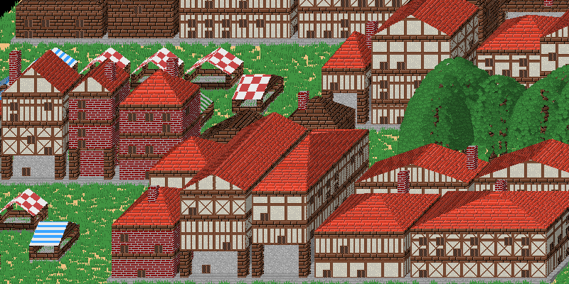

Pixelopolis¶
Pixelopolis is a render engine for simple, pixelart-like scenarios in oblique projection with CSS-like syntax.
The main usage is rendering pixelart-like cities or buildings. You can using to your strategy game or make a twitter bot. It’s your choice!
You can tests it online: https://pixelopolis.herokuapp.com
Warning
this code is ‘very beta’ - please don’t be angry when something doesn’t work ;_;